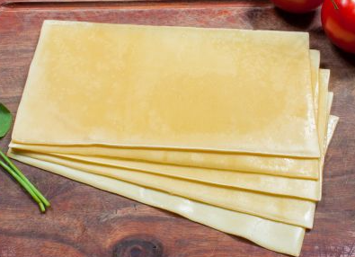
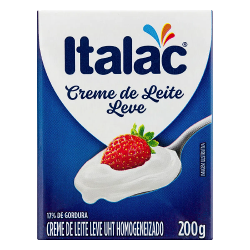
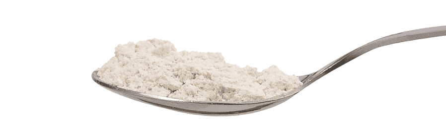
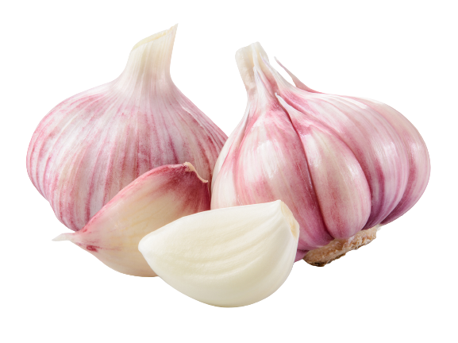
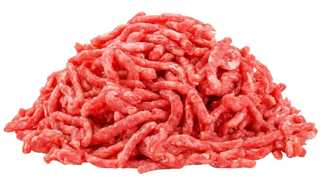
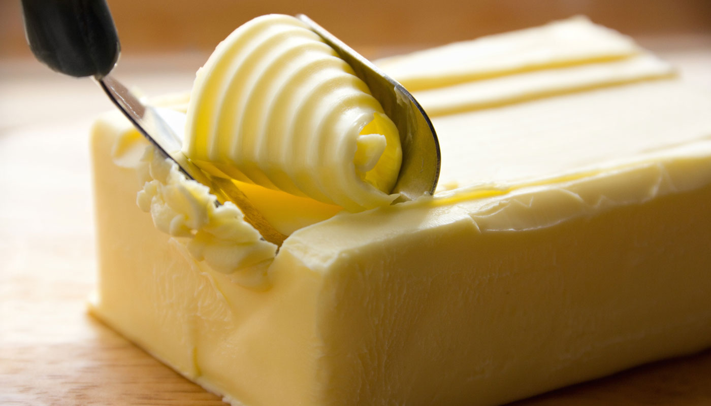
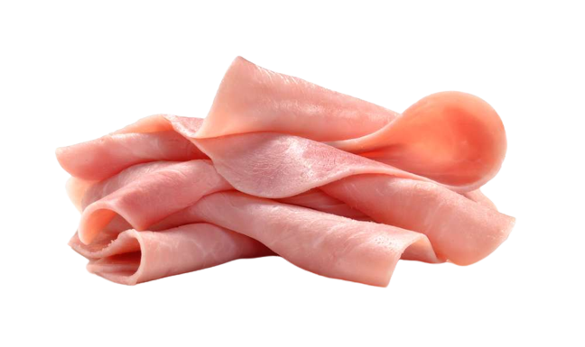
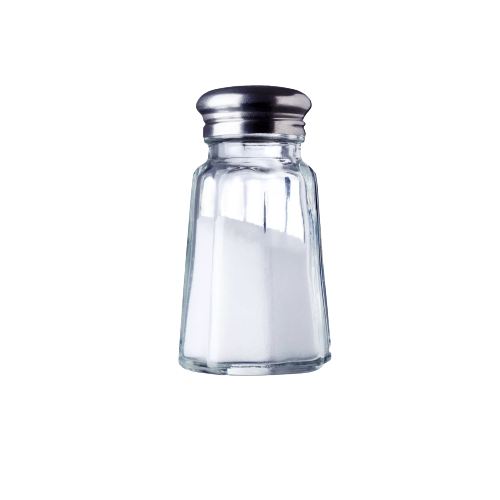
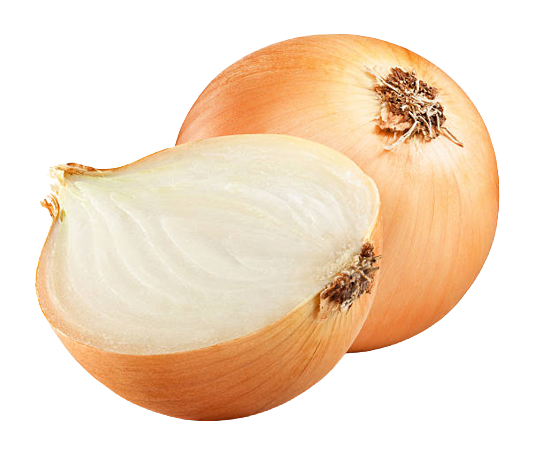

A receita de lasanha de carne moída é um prato clássico,
muito amado e muito fácil de preparar. Também conhecida
como lasanha à bolonhesa, pela sua origem em Bolonha,
na Itália, essa receita conquistou o mundo! Confira como fazer!
Massa:
Ingredientes:
500g de massa de Lasanha

2 caixas de creme de leite

3 colheres de farinha de trigo

500g de mussarela

2 copos de leite
3 colheres de óleo
3 dentes de alho amassados

500g de carne moída

3 colheres de manteiga

500g de presunto

sal a gosto

1 cebola ralada

1 caixa de queijo ralado
Modo de Preparo:
Lasanha:
Cozinhe a massa segundo as orientações do fabricante, despeje
em um refratário com água gelada para não grudar e reserve.
Molho à bolonhesa:
Refogue o alho, a cebola, a carne moída, o molho de tomate,
deixe cozinhar por 3 minutos e reserve.
Molho Branco:
Derreta a margarina, coloque as 3 colheres de farinha de trigo e mexa.
Despeje o leite aos poucos e continue mexendo.
Por último, coloque o creme de leite, mexa por 1 minuto e desligue o fogo.
Montagem:
Despeje uma parte do molho à bolonhesa em um refratário,
a metade da massa, a metade do presunto, a metade da
mussarela, todo o molho branco e o restante da massa.
Repita as camadas até a borda do recipiente.
Finalize com o queijo ralado e leve ao forno alto (220° C), preaquecido, por cerca de 20 minutos.
Caso tenha mais duvidas acesse o link abaixo com um tutorial em video